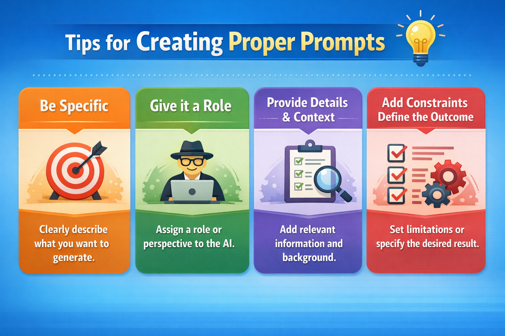

Crafting AI prompts for the best results
Crafting AI prompts is a skill that can be learned with practice. This guide will show you how to craft prompts that get the best results from your AI.

Introduction
Crafting AI prompts reminds me of the early days of web searches. You could type in a query in any search engine and get a list of results that you would then need to sift through to find the information you were looking for. If you wanted a more precise answer or if you didn't have the time to waste, you could use operators to refine your search and get more specific results. The same thing happens when you use AI prompts. You can type in a query and get a list of results that you would then need to sift through to find the information you were looking for, or you can refine your prompt in order to get more specific results to start with.
A 4 Step Process
Writing a prompt can be taken down to 4 steps:
- Be Specific
- Give it a Role
- Provide Context and Give Details
- Add constraints and define the outcome
Breaking it Down
1. Be Specific. Start with a clear and concise prompt.
Create a risk assessment for a class trip to the theatre.
2. Give it a Role. Tell the AI what role it should play in the conversation.
You are a theater teacher who teaches a grade 9 class. Create a risk assessment for a class trip to the theatre.
3. Provide Details and Context. Tell the AI what role it should play in the conversation.
You are a theater teacher who teaches a grade 9 class. Create a risk assessment for a class trip to the theatre. The risk assessment should include information on students getting lost, issues with transportation and if a student gets sick while at the theatre.
4. Add constraints and define the outcome. Tell the AI what role it should play in the conversation.
You are a theater teacher who teaches a grade 9 class. Create a risk assessment for a class trip to the theatre. The risk assessment should include information on students getting lost, issues with transportation and if a student gets sick while at the theatre. The assessment should not be longer than 300 words.
The tone should be crisp and geared towards parents.
General Tips
These are some general guidelines to work with when crafting your prompts:
- Ask the LLM to give you feedbacon on your work. Have it identify the strengths and weaknesses of your work and provide suggestions for improvement.
- Go back to various LLMS. They are constantly updating and offering new features and capabilities.
- Start your prompts with one LLM and then go back to the other LLMS to see if they can do better.
- When vibe coding, ask the LLM to construct the prompt for you (based on what you are trying to achieve) so that a particular Vibe Coding app understands what you are asking for.
If you constantly ask the same LLM to do the same thing, it will eventually get bored and start to produce less than stellar results.
Wrap-up
Experiment with different prompts and see what works best for you. There really is no right or wrong way to craft a prompt, but with practice you will get better at it.